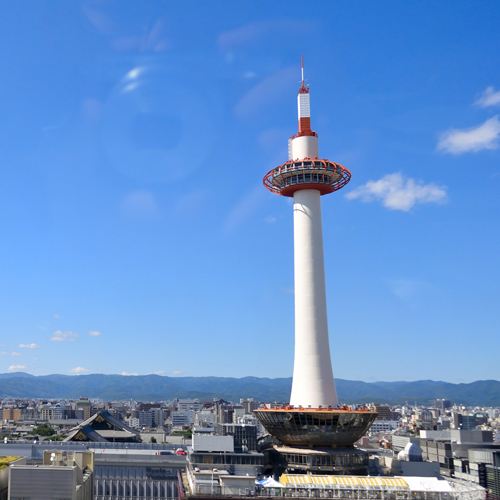

<!DOCTYPE html>
<html lang="ja" prefix="og: http://ogp.me/ns# fb: http://ogp.me/ns/fb# article: http://ogp.me/ns/article#">
<head>
<meta charset="utf-8">
<meta http-equiv="X-UA-Compatible" content="ie=edge">
<meta name="viewport" content="width=device-width,initial-scale=1.0,minimum-scale=1.0">
<meta name="format-detection" content="telephone=no">
<meta name="keywords" content="">
<meta name="description" content="ここに説明文を設定">
<title>Way to kyoto</title>
<meta name="twitter:card" content="summary">
<meta name="twitter:site" content="@twitteraccount">
<meta property="og:site_name" content="サイト名">
<meta property="og:title" content="サイトタイトル">
<meta property="og:description" content="サイト説明文">
<meta property="og:url" content="https://hoge.ecc.com/">
<meta property="og:image" content="https://hoge.ecc.com/ogp.png">
<meta property="og:type" content="website">
<link rel="shortcut icon" href="http://www.hoge.hoge/favicon.ico" type="image/vnd.microsoft.icon">
<link rel="apple-touch-icon" href="http://www.hoge.hoge/logo.png">
<link rel="stylesheet" href="">
</head>
<link rel="stylesheet" href="css/work05.css">
<body>
<header>
    <h1 class="header">
        <a href="">
            <span></span>
            <span></span>
            <span></span>
            <span></span>
        Way to Kyoto
        </a>
    </h1>
    <nav class="gNavi">
        <ul>
            <li class="home">
                <a href="#">
                    <span></span>
                    <span></span>
                    <span></span>
                    <span></span>
                     HOME
                </a>
            </li>

            <li class="home">
                <a href="#">
                    <span></span>
                    <span></span>
                    <span></span>
                    <span></span>
                    ABOUT
                </a>
            </li>

            <li class="home">
                <a href="#">
                    <span></span>
                    <span></span>
                    <span></span>
                    <span></span>
                    PHOTO
                </a>
            </li>

            <li class="home">
                <a href="#">
                    <span></span>
                    <span></span>
                    <span></span>
                    <span></span>
                    ACCESS
                </a>
            </li>
            <li class="ex">
                <a class="btn" href="#">CONTACT EX</a>
            </li>
        </ul>
    </nav>
</header>
<main>
    <div class="mainImg">
        <section class="catchTxt">
            <h2>そうだった。<br>
                京都行かなくちゃ</h2>
            <p>まだ私が小さかった頃、母親の手を握りしめ歩いた京都の町並み。<br>
                今は我が子が手を握りしめ、あの頃と同じ景色。変わらない町。</p>
        </section>
    </div>
    <div class="mau">
        <div class="content">
        <section>
            <h2>親子で歩く京都散策</h2>
            <div class="sectionWrap">
                <section>
                    <figure>
                        
                    </figure>
                    <h3>名所を巡る</h3>
                    <p>市内を中心に観光名所を1時間かけてゆっくり巡るコースです いくつかの巡回ルールがあるので、日を分けてゆっくり回りたい人におすすめです。
                    </p>
                </section>

                <section>
                    <figure>
                        
                    </figure>
                        <h3>食べて巡る</h3>
                        <p>市場や露店を中心に食べ歩きを満喫出来るコースです。 名産を味わいたい方におすすめです。
                        </p>
                </section>

                <section>
                    <figure>
                        
                    </figure>
                        <h3>展望から見渡す</h3>
                        <p>町並みを360度見渡せる展望コースです。 京都駅から展望台まで散策しながら、最後には絶景のパノラマが味わえます。</p>
                </section>
            </div>
        </section>
    </div>    
</main>

<footer>
    <p>
        <small>copyright &copy; comp ecccomp.Inc</small>
    </p>
</footer>
</div>

</body>
</html>